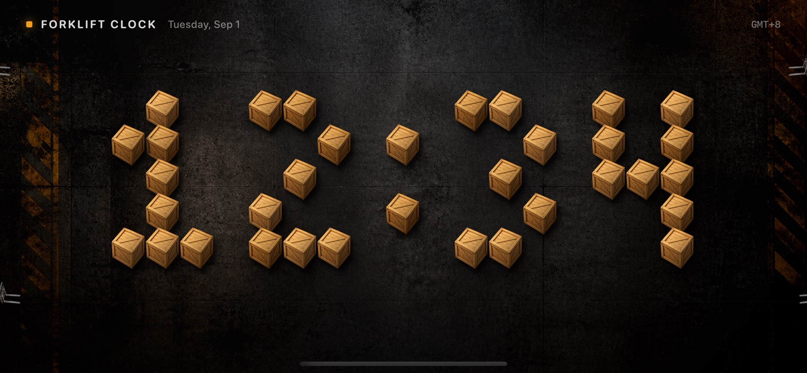
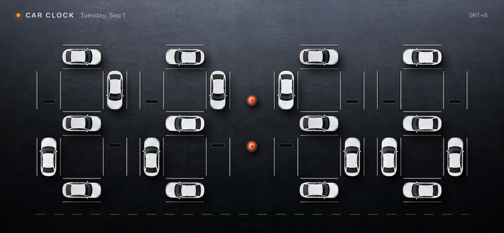
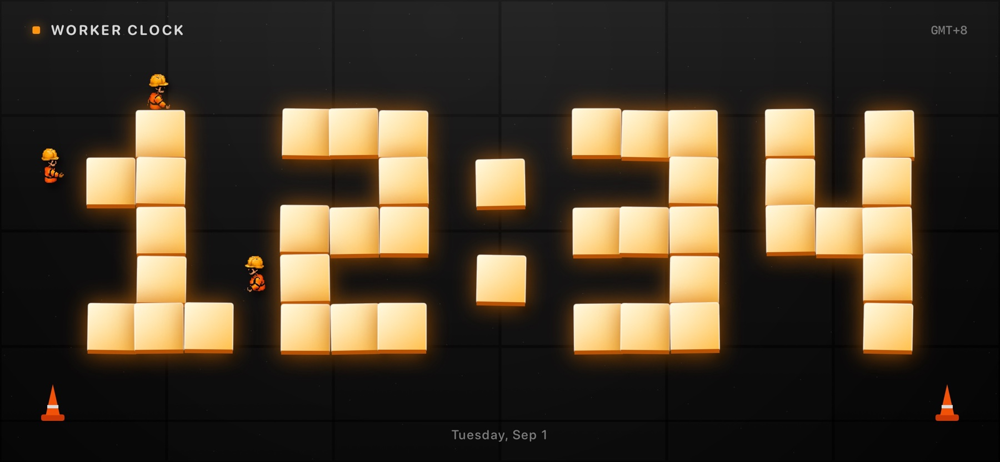
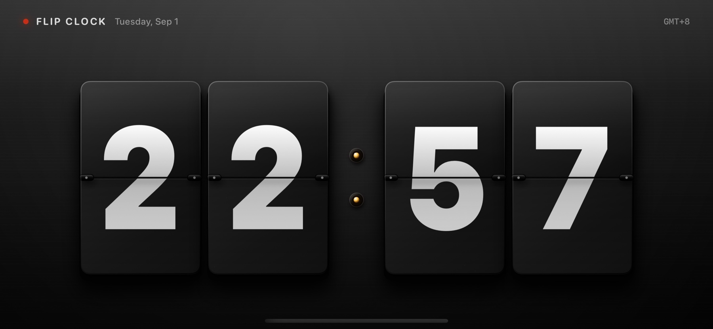

01 / FORKLIFT
叉车仓库时钟
穿过通道，避开货物，把新一分钟准确送达。
时间不只是数字。它可以驶入车位、穿过仓库、由工人亲手搭建，也可以伴随机械声安静翻过一页。

四套独立视觉语言，共享同一个真实时间源。分钟变化时，整个场景自然开始工作。

穿过通道，避开货物，把新一分钟准确送达。

每个数字，都由工人一步步搭建。

克制的材质、重量感与真实翻页节奏。
车辆在整分钟驶离与归位，让时间真正流动。
只读取设备本地时间与时区，不需要账号，不依赖云端同步。
针对 iPhone 与 iPad 横屏构图，充分利用每一寸画面。
没有广告、分析 SDK 或追踪器。时钟体验全部在设备上完成。
CreativeClock for iPhone & iPad · iOS 17+